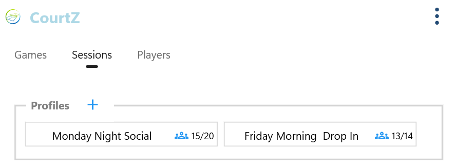
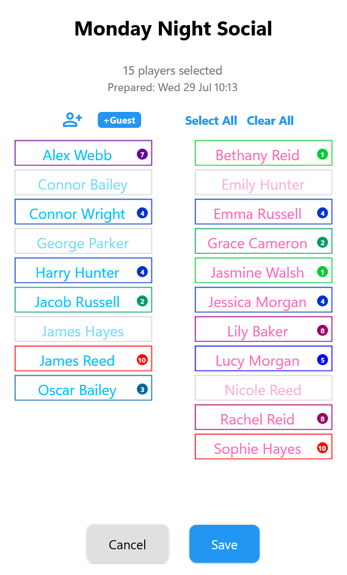
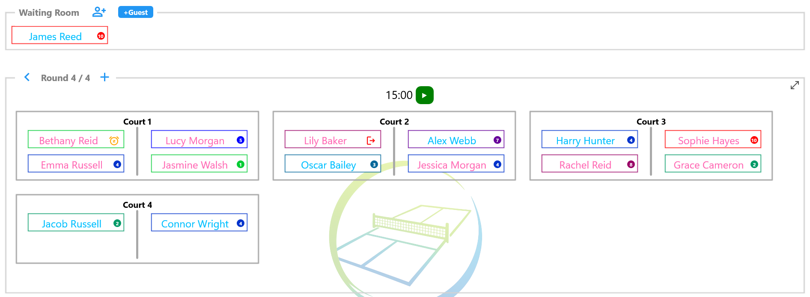
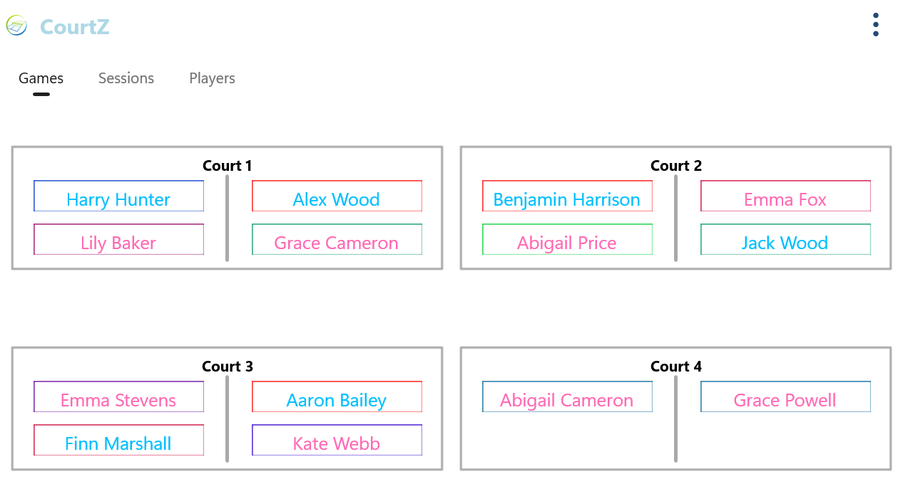

Whiteboards & Paper
Stop juggling magnets, paper lists and constant changes throughout the evening.
CourtZ helps you manage attendance, generate fair games and display each round on the big screen, so you can spend more time playing and less time organising.

Every organiser knows the routine. Players arrive, names are scribbled on a whiteboard, games are constantly rearranged and someone always ends up sitting out. CourtZ removes the admin so you can enjoy the session too.
Stop juggling magnets, paper lists and constant changes throughout the evening.
Leave the formulas behind and organise every session from one simple app.
Attendance, court allocations and player rotations are all recorded automatically.
Generate balanced games in seconds instead of spending the evening moving names around.

As players confirm they are coming, record attendance for each Session Profile. When you arrive at the venue, simply review the attendance, make any last-minute changes and start the session.
CourtZ remembers your regular players, so most sessions are ready to go with just a few taps. Review today's attendance, make any last-minute changes and start the session.


CourtZ creates balanced games based on player ability, previous partners and opponents, and the courts you have available. Every round is ready in seconds, keeping the evening moving and giving everyone a fair chance to play.
Display the latest games on a TV, projector or large tablet so everyone can instantly see where they're playing next. No more gathering around a whiteboard or asking who's on court— everyone stays informed and the session keeps moving.

From managing attendance to generating fair games and sharing your club setup, CourtZ gives organisers the tools they need to keep every session running smoothly.
Supports badminton, tennis, pickleball, padel and other court sports.
Save different club nights with their own players, courts and settings.
Maintain one list of club members and reuse it across every session.
Share your club configuration so another organiser can run the session using the same setup.